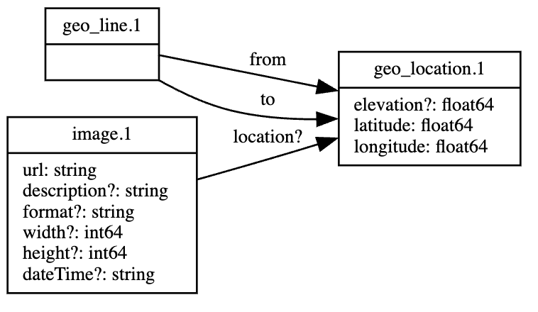

ivcap-df
A Python Library for interacting with the IVCAP Data Fabric
Defining Schemas
I need to define a much simpler example. Maybe along the lines of the classical Elementary School experiment of growing grass seeds with different amount of water added every so often - with maybe an imge taken as well for every observation
from ivcap_df import Schema, IdColumn, RefColumn, Column, ColType, Connector
common_ns = 'common'
geo_location_s = Schema('geo_location', common_ns, 'The geographic coordinates of a place or event', [
Column('elevation', ColType.FLOAT64, description="The elevation of a location (WGS 84). Value alone should be assumed to be in meters.", required=False),
Column('latitude', ColType.FLOAT64, description="The latitude of a location. For example 37.42242 (WGS 84)."),
Column('longitude', ColType.FLOAT64, description="The longitude of a location. For example -122.08585 (WGS 84)."),
])
geo_line_s = Schema('geo_line', common_ns, 'The geographic coordinates of a line defined by a from and to locations', [
RefColumn('from', geo_location_s, description='Location of the beginning of the line'),
RefColumn('to', geo_location_s, description='Location of the end of the line'),
])
image_s = Schema('image', common_ns, 'An image', [
Column('url', ColType.STRING, format='uri'),
Column('description', ColType.STRING, required=False),
Column('format', ColType.STRING, required=False),
Column('width', ColType.INT64, description="Image width in pixels", unit='pixel', required=False),
Column('height', ColType.INT64, description="Image height in pixels", unit='pixel', required=False),
Column('dateTime', ColType.STRING, description='The date and time this image was taken (in ISO 8601 date format).', format='date-time', required=False),
RefColumn('location', geo_location_s, required=False),
])
To visualise the schema relationships, execute the following in a Jupyter Notebook:
schemas = {
'geo_location_s': geo_location_s,
'geo_line_s': geo_line_s,
'image': image_s,
}
Schema.to_dot(schemas.values(), fontSize=10)

To persist the schema definition to IVCAP, run the following:
from ivcap_prov import Connector
ivcap_params = {"type": "ivcap", ...}
db = Connector.create(**ivcap_params)
for name, schema in schemas.items():
print(name)
schema.persist(db, verbose=False)
print("...schema done")
db.close()
Loading Data
First we will need to load the respective schemas:
from ivcap_prov import Connector,Schema
bg_ns = 'blue_growth'
ivcap_ns = 'ivcap'
db = Connector.create(**ivcap_params)
qimage_s = Schema.load(db, 'quadrat_image', bg_ns)
image_artifact_s = Schema.load(db, 'image_artifact', ivcap_ns)